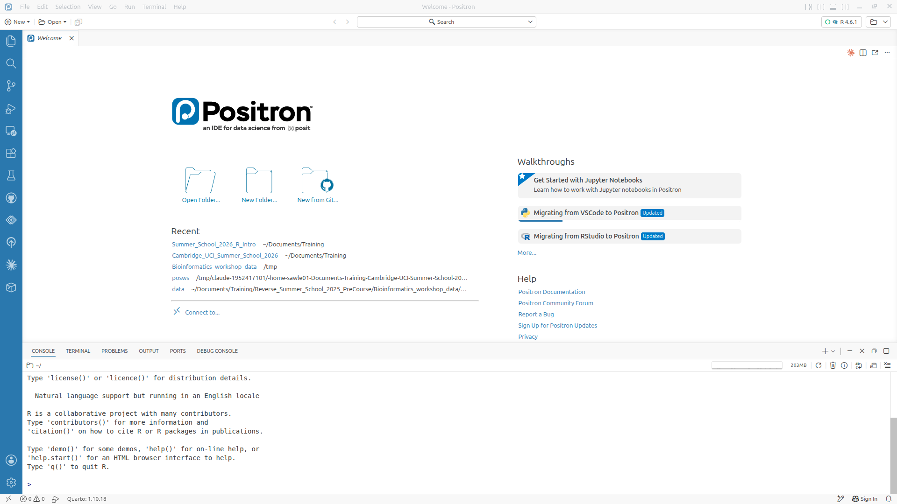
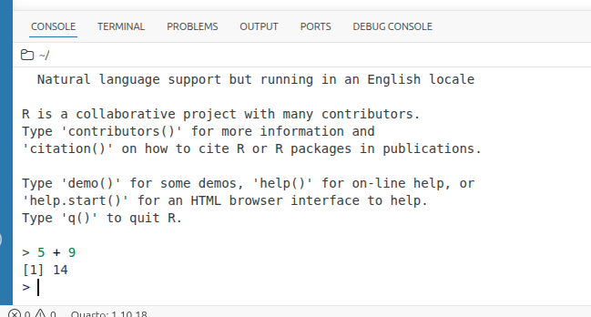
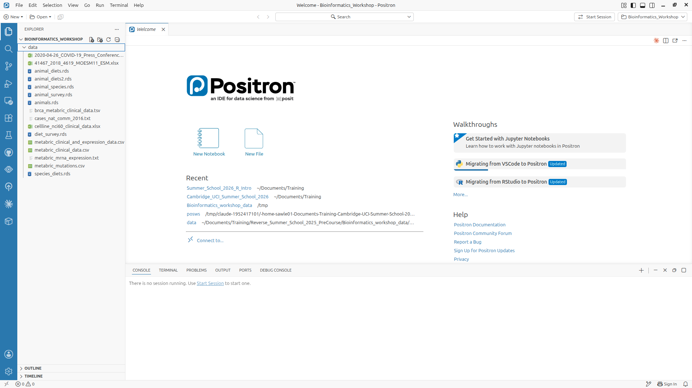
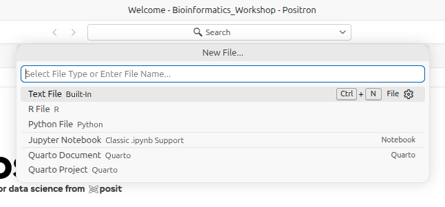
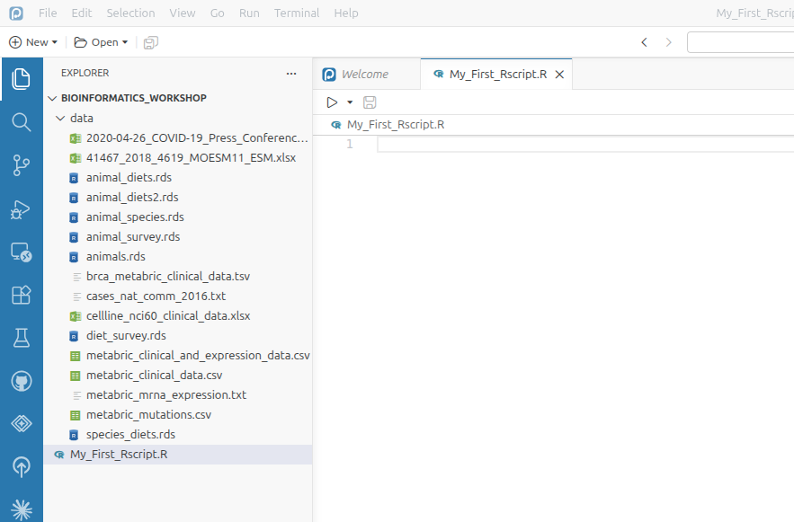
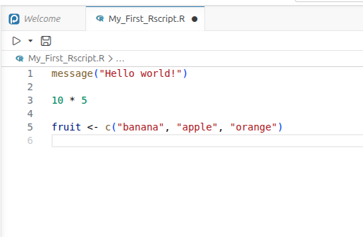
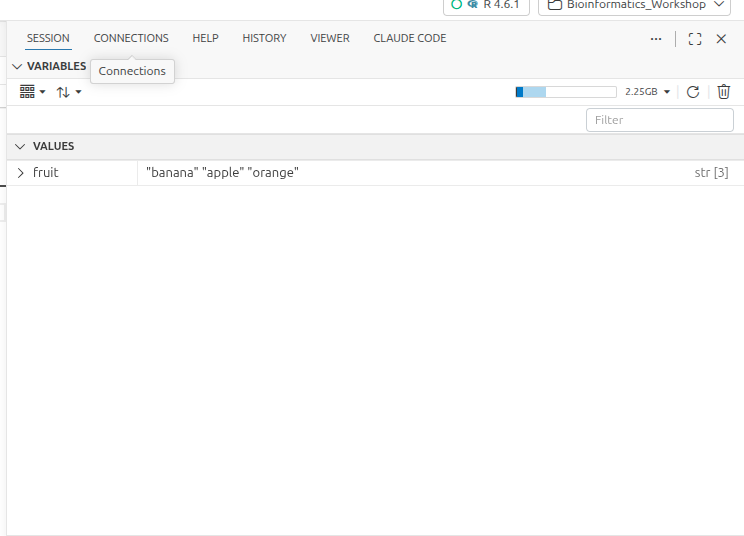
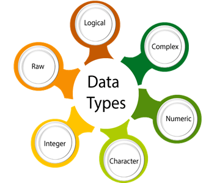
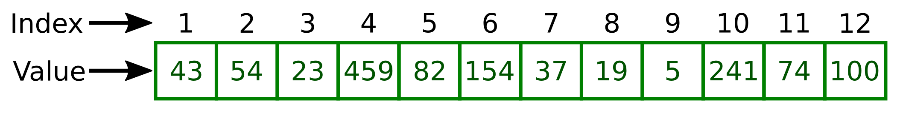

11 + 3 # Operation of addition performed correctly
"11" + 3 # gives errorSession 1: Data types and structures
NoteLearning objectives
- Become familiar with using Positron for writing and running R scripts
- Understand the basics of the different data types and data structures used in R
- Learn how to use simple functions
- Understand the concept of missing data and how it is handled in R
Introduction to R and Positron
Why learn R?
- R involves creating & using scripts which makes the steps you used in your analysis clear and can be inspected by someone else for feedback and error-checking.
- R code is great for reproducibility. An increasing number of journals and funding agencies expect analyses to be reproducible, so knowing R will give you an edge with these requirements.
- R integrates with other tools to generate manuscripts from your code. This document (a Quarto document) is a case in point.
- R is interdisciplinary and extensible and has thousands of installable packages to extend its capabilities. R has packages for image analysis, GIS, time series, population genetics, and a lot more.
- R scales well to work on data of all shapes and sizes.
- R can connect to spreadsheets, databases, and many other data formats, on your computer or on the web.
- R produces high-quality graphics suitable for publication in journals or the web.
- R has a large and welcoming community - Thousands use R daily and many of them are willing to help you through websites such as Stack Overflow or the Bioconductor community.
- Not only is R free, but it is also open-source and cross-platform.
Positron - a brief tour
Positron provides us with a friendly interface to the R statistical programming language. It’s a sophisticated IDE (Integrated Development Environment) that is built on top of Microsoft’s Visual Studio Code. It has many features that make it easier to write and run R code, including syntax highlighting and code completion. In this course we will only explore a few of the features of Positron.
When you first open Positron you will see a screen similar to the one below. At the bottom of the screen is the “Panel”, currently this shows theconsole window, which is the actual interface for the R programme. Above the “Panel” is the “Editor” window; we will write our code here. On the left-hand side of the screen is the “Activity Bar” which provides access to various features of Positron. Hovering the mouse over the icons in the “Activity Bar” will show you what each icon does. In this course we will only be using the “Explorer” icon to open the folder in which we will be working and files that we will work on.

Console
At the bottom of the screenwe find the console window. This is the actual interface for the R programme.
We can type commands directly into the console and run them by pressing Enter.

So, this area could be used like a calculator. Let’s just type in something like 23 + 45 followed by the Enter key and see what happens. You should get the following:
> 23 + 45
[1] 68Now 68 is clearly the answer but what is that 1 in brackets?
Here is another example to explain. If we type 1:36 and press enter, what happens? R generates output counting from 1 to 36 but cannot fit all the output on one line and so starts another like this:
> 1:36
[1] 1 2 3 4 5 6 7 8 9 10 11 12 13 14 15 16 17 18 19 20 21 22 23 24 25
[26] 26 27 28 29 30 31 32 33 34 35 36Now we have two lines beginning with a number in square brackets. Note that the number of values displayed on each line may differ on your computer; it largely depends on the width of your console pane and the font size. Try creating a larger sequence of numbers, e.g. 1:100, if all 36 numbers fit on a single line in your case.
This is just R helping us to keep tabs on which number we are looking at. [1] denotes that the line starts with the first result and the [26] denotes that this line starts with the 26th number. Let’s try another one and generate a sequence incrementing in steps of 2:
> 1:36 * 2
[1] 2 4 6 8 10 12 14 16 18 20 22 24 26 28 30 32 34 36 38 40 42 44 46 48 50
[26] 52 54 56 58 60 62 64 66 68 70 72There are other tabs on this pane but we shall not be covering these on this course.
The Explorer
As general rule, the first thing to do is to open the folder in which you wish to work. In our case this will be the Bioinformatics_Workshop directory, which contains the data directory with all the data files we will be using in this course. To do this, click on the “Open Folder” button (or use the File menu >> Open Folder) and navigate to the Bioinformatics_Workshop directory.
When you first open the Bioinformatics_Workshop directory, you will just see the data directory. If you click on the small triangle to the left of the data directory, you will see all the files as below.

Note that once you have used Positron to open a folder, it will remember this and automatically open the last folder you were working in when you next open Positron.
The Editor
The Editor is a panel for creating, editing & running R scripts. Rather than simply typing our commands directly into the console, we can write them here as an “R script”. As you will see, a script is basically a text file that contains R commands and comments to explain what the code does.
Currently the Editor panel just contains the “Welcome” tab. To create a new R script click on the “New File” button on the “Welcome” tab or use File menu >> New File. This will open the dialogue shown below.

In the dialogue box where it says “Select File Type or Enter File Name…” type My_First_Rscript.R and press Enter. Save the new file in the Bioinformatics_Workshop directory. You should now see the new file in the Explorer pane and the Editor pane should now look like this:

This is a blank script file. You can now type your R commands here.
We send the commands typed here to the console by placing the cursor on the line with the command and pressing Ctrl + Enter (Cmd + Enter on a Mac). You can also send multiple lines to the console by highlighting them and pressing Ctrl + Enter (Cmd + Enter
The advantage of using a script rather than typing directly into the console is that our commands are not lost, we can save the text file for future use and it is easier to make changes to our code.

A script is an R program that you have written. Good practice is for each script to perform only one role in your analysis workflow and so you may have several R scripts which you call, in a particular sequence, to analyse your data.
As well as R scripts, there are many types of Positron document including Quarto documents, which we have used to build the materials for this course. These can provide interactive workbooks or web documents to name but a few possible outcomes.
Session Panel
Now go to the View menu and select Variables. This will open the “Session” Panel on the right of the screen. This contains two panels: “Variables” and “Plots”.
The “Variables” panel will show you all the variables that you have created in your R session and their values.

Below the “Variables” panel is the “Plots” panel, which will display any graphs you create in your R session.
There are a number of other tabs available alongside the “Session” panel. The only one that we will look at in this course is the “Help” tab, which will display the help pages for any R function you are using.
Our first look at the R language
Our overall goal for this course is to give you the ability to import your data into R, select a subset of the data most of interest for a given analysis, carry out an analysis to summarize these data and create visualizations of the data. First though, let us consider “What is Data?”
Data comes in many forms: Numbers (Integers and decimal values) or alphabetical (characters or lines of text). Clearly a computer (or R) needs a way of representing this wide range of data with it’s diverse properties.
Data types in R

R has 6 basic data types:
- character
- a “character” is nothing but a series of letters, numbers and punctuation marks. You will often see this referred to as a string.
- anything between two quotes (Single or double quotes): “a”, ‘cat’
- Quoted numbers are character type: ‘3.14’
- double:
- Set of all real numbers
- Could be a integer or include a decimal: 10, 3.14, 1.45765, 5, 1000000
- Set of all real numbers
- integer: Whole numbers. 5L (the “L” tells R to store this as an integer)
- logical: TRUE, FALSE
- complex: 1+4i (complex numbers with real and imaginary parts)
- raw: Holds raw bytes
The last two data types are rarely used in practice.
We will learn about an additional specialist data class factor in the next session.
double and integer both have the additional type numeric.
There are some additional specialist data types, such as dates, but we wont be dealing with them in this course.
Different types of data are needed in programming for a variety of reasons:
- Some commands can only be used on particular data types. For instance mathematical operations (+, -, x and /) are only meaningful for numbers.
- Efficient storage, e.g. the integer type uses less memory than the double (decimal) data type.
Data structures in R

R has many data structures. These include:
- Atomic vector
- data frame
- matrix
- list
- factors
Atomic vector
The atomic vector is the fundamental data structure in R and all the other data structures built on vectors.
We can assign a value to an object with a name:
x <- 100Here we are creating an object called x containing the value ‘100’.
Note: The terms object and variable are often used interchangeably, even though they do have subtly different meanings.
The assignment operator <- causes the value 100 to be assigned to the variable named x.
Note: you can also use = instead of <-, however, best practice is to use <-.
x <- 100
x = 100After a variable/object is created, it can be used as many times as needed.
y <- 10
y * y## [1] 100y + y## [1] 20100 + y## [1] 110The values assigned to a variable can be replaced:
x <- "Tom"
x## [1] "Tom"x <- "Jerry"
x## [1] "Jerry"Variable names can not start with a number or a special characters like (_, -, *, etc)
2x <- 100## Error in parse(text = input): <text>:1:2: unexpected symbol
## 1: 2x
## ^_x <- 100## Error in parse(text = input): <text>:1:2: unexpected symbol
## 1: _x
## ^The only special characters allowed in variable names are “_” and “.” any other special character throws an error]
my-name <- "Ashley"## Error:
## ! object 'my' not foundTo R the “-” symbol means minus, so it is interpreting the first part of the line as an instruction to subtract the value of variable called “name” from the value of a variable called “my”, however, neither of these exists, so it throws an error.
my_name <- "Ashley"
my.name <- "Ashley"- R is case sensitive
- COUNTRY and country are two different variables
COUNTRY <- "United Kingdom"
country <- "Uganda"
COUNTRY## [1] "United Kingdom"country## [1] "Uganda"Atomic vectors with more than one value
- The
c()function should be used to create a vector that holds more than one value - c stands for combine
- values are separated by “,”
x <- 100, 200## Error in parse(text = input): <text>:1:9: unexpected ','
## 1: x <- 100,
## ^x <- c(100, 200)- the “:” operator that generates a range of values
x <- 1:40
x## [1] 1 2 3 4 5 6 7 8 9 10 11 12 13 14 15 16 17 18 19 20 21 22 23 24 25
## [26] 26 27 28 29 30 31 32 33 34 35 36 37 38 39 40The values in a vector must all be of the same data type, such as numerics, integers, characters, logic, complexes, or raw data.
When we attempt to mix different data types in a single vector, R automatically converts the data types, this phenomenon is called Coercion
x <- c(1, 2, 3, 4)
typeof(x)## [1] "double"x <- c(1, "2", 3, 4)
typeof(x)## [1] "character"z <- c(TRUE, FALSE, FALSE)
typeof(z)## [1] "logical"z <- c(TRUE, FALSE, "FALSE")
z## [1] "TRUE" "FALSE" "FALSE"typeof(z)## [1] "character"y <- c(TRUE, FALSE, TRUE, 1L)
y## [1] 1 0 1 1typeof(y)## [1] "integer"A note on logical vectors
The logical values “TRUE” and “FALSE” are internally represented as 1 and 0. Therefore mathematical operations can be performed on these vectors.
y <- c(TRUE, FALSE, TRUE)
y## [1] TRUE FALSE TRUEsum(y)## [1] 2mean(y)## [1] 0.6666667Vectorization in R
It is important to note that most of R’s functions are vectorized, which means that they operate on all elements of a vector without looping through each element one by one. Coding becomes more concise, easier to read, and less prone to errors as a result.
x <- c(1, 2, 3, 4, 5)
x * 5## [1] 5 10 15 20 25x + 1## [1] 2 3 4 5 6Vectorization is powerful, quick and concise, but leads to confusion when vector lengths are different.
x <- c(1, 2, 3, 4, 5, 6)
y <- c(1, 2, 3, 4, 5, 6)
x + y## [1] 2 4 6 8 10 12x <- c(1, 2, 3, 4, 5)
y <- c(1, 2)
x + y## Warning in x + y: longer object length is not a multiple of shorter object
## length## [1] 2 4 4 6 6
Accessing specific elements of an atomic vector
If a vector contains more than one value, we may times only wish to access specific values within the vector. To this we use the [] subscript operator.
Within [] one can give any of the following:
- Vector of index numbers
- Vector of logical values

Using integer vector containing index numbers
vec <- c(10, 20, 30, 40, 50, 60, 70, 80, 90, 100)
vec## [1] 10 20 30 40 50 60 70 80 90 100To extract 4th value from the vector:
vec[4]## [1] 40To extract 4th and 7th values from the vector:
vec[c(4, 7)]## [1] 40 70We can also invert the selection using “-” symbol, e.g. to extract all the values except 4th and 7th values:
vec[c(-4, -7)]## [1] 10 20 30 50 60 80 90 100It is also possible to selectively replace specific vector values using the same notation.
x <- c(10, 20, 30)
x[2]## [1] 20x[2] <- 1000
x## [1] 10 1000 30Using a logical vector to select values from a vector
We can also extract values using a vector of logical values. Normally the logical vector should be the same length as the vector from which we are extracting values, however, if it is shorter then it will be recycled as necessary - this can be confusing.
y <- c(5, 8, 10)
myLogicalVec <- c(FALSE, TRUE, FALSE)
y[myLogicalVec]## [1] 8vec[myLogicalVec]## [1] 20 50 80In practice we do not create logical vectors manually, they are most usually generated as the outputs of boolean comparison. This allows us to select values from a vector based on their characteristics.
The basic comparison operators are:
| Operator | Meaning | Example | Result |
|---|---|---|---|
| == | Equal to | 100 == 90 | FALSE |
| != | Not equal to | 100 != 90 | TRUE |
| > | Greater than | 100 > 90 | TRUE |
| < | Less than | 100 < 90 | FALSE |
| >= | Greater than or equal to | 100 >= 90 | TRUE |
| <= | Less than or equal to | 90 <= 90 | TRUE |
We will encounter other functions that can also generate logical vectors using more complex tests later in the course.
Using these comparison operators we can test each of value in a vector and generate a logical vector that tells us which values match our criteria.
For example, to only keep values that are greater than 20:
x <- c(10, 20, 30, 40)
x == 20## [1] FALSE TRUE FALSE FALSEx > 20## [1] FALSE FALSE TRUE TRUEkeep <- x > 20
keep## [1] FALSE FALSE TRUE TRUEx[keep]## [1] 30 40x[ x > 20 ]## [1] 30 40By using logical operators one can create complex expression for more complex subsetting. The logical operators are:
| Operator | Meaning | Effect |
|---|---|---|
| & | AND | Connects two expressions into one. Both expressions must be true for the overall expression to be true |
| | | OR | Connects two expressions into one. One or both of the expressions must be true for the overall expression to be true. It is only necessary for one to be true, it doesn’t matter which |
| ! | NOT | Inverts the “truth” of the expression - FALSE becomes TRUE and TRUE becomes FALSE |
For instance if you want to extract all the values in a vector that are greater than 10 but less than 40
x <- c(10, 20, 30, 40)
x[x > 10]## [1] 20 30 40x[x < 40]## [1] 10 20 30x[ x > 10 & x < 40]## [1] 20 30We could use “!=” to select all values not equal to 20, but to demonstrate the “!” (NOT) operator, we could also do:
x[ !x == 20 ]## [1] 10 30 40Converting the class of vector from one data type to another
We can convert the data type of a vector to different classes using the “as” family of functions:
as.character(): convert to character type dataas.numeric(): convert to numerics vectoras.integer(): convert to integer vectoras.logical(): convert to logical vector
This will have different effects depending on the original class of the vector.
For example it is perfectly sensible that we could convert an integer vector to a character vector:
x <- 1:5
x## [1] 1 2 3 4 5as.character(x)## [1] "1" "2" "3" "4" "5"On the other hand there is usually no logical way we could convert a character vector qo an integer vector:
x <- c("apple", "banana", "orange")
x## [1] "apple" "banana" "orange"as.integer(x)## Warning: NAs introduced by coercion## [1] NA NA NAExcept where the value is a number:
x <- c("Blue", "23", "45", "9.89", "Red")
x## [1] "Blue" "23" "45" "9.89" "Red"as.integer(x)## Warning: NAs introduced by coercion## [1] NA 23 45 9 NANote that as we specified as.integer, rather than as.numeric “9.89” was converted to 9.
as.numeric(x)## Warning: NAs introduced by coercion## [1] NA 23.00 45.00 9.89 NAA logical vector can be converted to either character or integer:
x <- c(TRUE, FALSE, TRUE, FALSE)
x## [1] TRUE FALSE TRUE FALSEas.character(x)## [1] "TRUE" "FALSE" "TRUE" "FALSE"as.integer(x)## [1] 1 0 1 0Testing the class of an object
We can perform a logical test on an object to determine it’s data class using the “is.XXX” family of functions:
- is.character(): to test if the object holds character type data
- is.double(): to test if the object holds decimal type data
- is.numeric(): to test if the object holds numeric type data
- is.integer(): to test if the object holds integer type data
- is.logical(): to test if the object holds logical type data
The output of this family of functions is a logical value TRUE or FALSE
We can also test for the type of data structure
- is.vector(): To determine if the object is a vector
- is.matrix(): To determine if the object is a matrix
- is.data.frame(): To determine if the object is a data frame
x <- 1:100
typeof(x)## [1] "integer"is.integer(x)## [1] TRUEis.vector(x)## [1] TRUEis.matrix(x)## [1] FALSER Arithmetic Operators
Mathematical operations such as addition and multiplication are performed using various operators. Here is a list of R’s arithmetic operators.
- Addition: +
- Subtraction: -
- Multiplication: *
- Division: /
- Integer division: %/%
- Modulus (Remainder from division): %%
- Exponent: ^
For example
5 * 5## [1] 253 ^ 3## [1] 277 / 3## [1] 2.3333337 %/% 3## [1] 27 %% 3## [1] 1Functions and their arguments
Functions are a fundamental building block of R code. Functions are “canned scripts” that automate more complicated sets of commands including operations, assignments, etc. Functions are contained in packages. There are a number of packages that are automatically loaded when you start that provide basic functions e.g. mean or c. We can also extend the number of functions available by importing additional R packages (more on that later).
A function usually takes one or more inputs called arguments. Functions often (but not always) return a value. A typical example would be the function round(). The input (the argument) must be a number, and the return value (in fact, the output) is the rounded number. Executing a function (‘running it’) is referred to as “calling” the function. An example of a function call is:
round(pi)## [1] 3round is a function that takes at least one number and returns a number that rounded to the nearest integer.
In R function calls always have the same syntax, which is the function name followed by ().
The arguments that you need to specify between the () will depend on the function - the names and numbers of arguments vary from function to function. The best way to learn how to use a particular function is to access the documentation page for that function. You can do this in number of ways:
- How to get help in R details: https://www.r-project.org/help.html
- By typing
?followed by the name of the function in the console, e.g.?round - By using the
help()function, e.g. help(“round”) - note the quotes around the work “round” - Use your favourite browser to search the web, e.g. “R round documentation”
?roundFrom the documentation page, you can see that round() takes exactly two arguments:
- x: a numeric vector
- digits: integer indicating the number of decimal places to round
round(x = pi, digits = 0)## [1] 3round(x = pi, digits = 2)## [1] 3.14round(x = pi, digits = 4)## [1] 3.1416As long as you use argument names, the order of the arguments does not matter.
round(digits = 4, x = pi)## [1] 3.1416As long as you provide the arguments in the correct order, then you don’t need to use the names.
round(pi, 4)## [1] 3.1416However, it is best practice to use the names for at least everything but the first argument, rather than relying on being able to remember what the arguments are when you come back to your code at a later date.
round(pi, digits = 4)## [1] 3.1416It also avoids inadvertent mistakes:
round(4, pi)## [1] 4This worked, but it’s not what I meant. In a more complex function, with many arguments, this would be hard to spot.
Some useful math/stat functions in R:
max(): maximum value in a numeric vectormin(): minimum value in a numeric vectorrange(): vector of min and maxsum(): sum of a vectormean(): mean of a vectormedian(): median of a vectorvar(): variance of a vectorsd(): standard deviation of a vectorsort(): sorted version of a vectorlength(): length of an objectcor(): correlation of x and y
Data type conversion functions - the as."datatype" family of functions are useful for converting one data type to other:
as.numeric()
as.character()
as.integer()
Missing data
As R was designed to analyze datasets, it includes the concept of missing data (which is uncommon in other programming languages). Missing data are represented in vectors as NA.
When doing operations on numbers, most functions will return NA if the data you are working with include missing values. This feature makes it harder to overlook the cases where you are dealing with missing data. For some functions you can add the argument na.rm = TRUE to calculate the result while ignoring the missing values.
heights <- c(2, 4, 4, NA, 6)
mean(heights)## [1] NAmax(heights)## [1] NAmean(heights, na.rm = TRUE)## [1] 4max(heights, na.rm = TRUE)## [1] 6The function is.na() is useful to identify missing data in your data set. It generates a logical vector that tells whether or not each value is missing. We could then use this to omit missing values for function that do not include the na.rm argument, or just to remove them from the dataset entirely.
missingValues <- is.na(heights)
missingValues## [1] FALSE FALSE FALSE TRUE FALSEcleanedHeights <- heights[!missingValues]
cleanedHeights## [1] 2 4 4 6Exercises
- You have been given a list of tumour volumes from 5 patients, 2.1, 1.9, 2.6, 1.8, and 3 \(cm^3\). Create a vector in R containing this data. Then get the following characteristics of data by applying some of the functions listed above.
- How many observations we have?
- What is the mean tumour volume?
- How many patients has tumour volume less than 2 \(cm^3\)?
NoteAnswer
First create the vector using the c() function and assign it to a variable.
tumourVol <- c(2.1, 1.9, 2.6, 1.8,3)We can use the length() function to find the number of values in a vector.
length(tumourVol)## [1] 5The mean() function will give us the mean volume.
mean(tumourVol)## [1] 2.28First test the vector using the “<” operator to generate a logical vector and then use sum() to determine how many of these are “TRUE”.
isSmall <- tumourVol < 2
sum(isSmall)## [1] 2You have given two vectors of observations:
data1 <- c(10, 9, 7, 6, 7, 3, 7, 5, 6, 6) data2 <- c(5, 2, 10, 7, 2, 5, 1, 5, 3, 4)- use the function
cor()to get the correlation coefficient - Can you identify the default correlation method the
cor()function uses? For help usehelp()or? - Can you get Spearman correlation coefficient for these two vectors?
- use the function
NoteAnswer
Challenge 2a: use the function cor() to get the correlation coefficient:
data1 <- c(10, 9, 7, 6, 7, 3, 7, 5, 6, 6)
data2 <- c(5, 2, 10, 7, 2, 5, 1, 5, 3, 4)
cor(x=data1, y=data2)## [1] -0.1572206Challenge 2b: Can you identify the default correlation method the cor() function uses?
?corAccording to the help in the ‘cor’ file, if no method is specified by default the function will use the ‘pearson’ method.
Challenge 2c: Can you get Spearman correlation coefficient for these two vectors?
cor(x=data1, y=data2, method = "spearman")## [1] -0.2839244- What is the output of following operations and explain your logic behind it.
- c(5, 2, 9, 1, 13) * 2
- c(5, 2, 9, 1, 13) * c(1, 2)
- c(5, 2, 9, 1, 13) + c(1, 2, 3, 4, 5)
NoteAnswer
Challenge 4a: c(5, 2, 9, 1, 13) * 2
c(5, 2, 9, 1, 13) * c(2)## [1] 10 4 18 2 26Since the shorter vector has only one value, every value of the longer vector is multiplied by the value of the shorter vector.
Challenge 4b: c(5, 2, 9, 1, 13) * c(1,2)
c(5, 2, 9, 1, 13) * c(1,2)## Warning in c(5, 2, 9, 1, 13) * c(1, 2): longer object length is not a multiple
## of shorter object length## [1] 5 4 9 2 13Since the shorter vector has only two values, these two values are sequentially recycled to multiply the longer vector’s values.
Challenge 4c: c(5, 2, 9, 1, 13) + c(1,2,3,4,5)
c(5, 2, 9, 1, 13) + c(1,2,3,4,5)## [1] 6 4 12 5 18Due to the fact that both vectors have the same length, values are sequentially added together
- From the vector c(23, 12, 41, 65, 23, 6), can you extract those values that are equal to 23 or less than 15?
NoteAnswer
vec <- c(23, 12, 41, 65, 23, 6)
vec[ vec == 23 | vec < 15]## [1] 23 12 23 6- “month.name” is an in-built R vector
- What is the index number of “April” in month.name vector? hint: the
whichfunction may help you. - Extract all the months from April to December
- What is the index number of “April” in month.name vector? hint: the
NoteAnswer
Challenge 6a: What is the index number of “April” in month.name vector?
april <- which(month.name == "April")
april## [1] 4Challenge 6b:Extract all the months from April to December
month.name[april:length(month.name)]## [1] "April" "May" "June" "July" "August" "September"
## [7] "October" "November" "December"Use the
sample()function to simulate the rolling of a 6-sided die.If you look at the help page for
sampleyou’ll find there are two functions with the same name, one in thebasepackage and the other in thedplyrpackage. Thesamplefunction in thebasepackage is the one you need for this exercise.- Count the number of sixes you get for 1000 rolls.
- What number would you expect to get? Calculate this in R.
- Re-run the simulation a few times by clicking on the green ‘Run current chunk’ button. What do you notice?
- Re-run the simulation with a much larger sample size. Check that the number of sixes you obtain is much closer to the expected value.
NoteAnswer
Challenge 7a: Count the number of sixes in 1000 rolls.
six_sided_die <- 1:6
rolls <- sample(six_sided_die, size = 1000, replace = TRUE)
sum(rolls == 6)## [1] 166Challenge 7b: What number would you expect?
1000 / 6## [1] 166.6667Challenge 7c: Re-running the simulation gives a different number of sixes each time, because each run draws a new random sample.
Challenge 7d: Re-running with a larger sample size.
number_of_rolls <- 100000
number_of_rolls / 6## [1] 16666.67rolls <- sample(six_sided_die, size = number_of_rolls, replace = TRUE)
sum(rolls == 6)## [1] 16670The proportion of sixes gets closer to the expected value as the number of rolls increases.
Simulate the rolling of a weighted six-sided die.
Imagine we’re running a casino and we have some weighted dice in which the probability of throwing a six is a bit lower than it should be if all is fair and square. Let’s say the probability of throwing a six is 0.1 while the other 5 numbers all have equal probability.
Calculate the probability of throwing each of the other numbers and then, referring again to the help page for
sample(), re-run the simulation using these probabilities. See how many sixes you get.Hint: use the
rep()function to save some typing.
NoteAnswer
prob_six <- 0.1
prob_not_six <- 1.0 - prob_six
prob_other <- prob_not_six / 5
number_of_rolls <- 100000
# the number of sixes we would expect with the weighted die
number_of_rolls * prob_six## [1] 10000# rep() saves us writing out prob_other five times
rolls <- sample(1:6,
size = number_of_rolls,
replace = TRUE,
prob = c(rep(prob_other, 5), prob_six))
sum(rolls == 6)## [1] 9884Credit
These instructions were adapted from Data Carpentry course materials by various members of the Bioinformatics Core at CRUK CI.